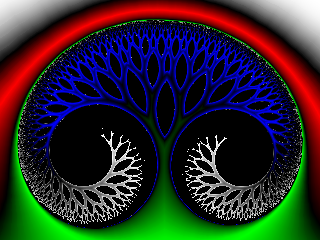

Fractal type: Glynn
Equation:
 The resulting Julia sets are made with powers p in [1,2] and c values close outside the western boundary.
The resulting Julia sets are made with powers p in [1,2] and c values close outside the western boundary.
Interesting values for the Julia c parameter are -0.2 + 0i for p equal to 1.5, and
-0.375 + 0i, -0.338 + 0i, 0.22 + 0i for p equal to 1.75
Default escape radius: 2.0
Default power: 1.5
Examples:
Dual fractal (p = 1.5; c = -0.2 + 0.0 i)

Dual fractal (p = 1.5; c = -0.2 + 0.0 i) (closeup)

Dual fractal (p = 1.75; c = -0.375 + 0.0 i)

Dual fractal (p = 1.75; c = -0.375 + 0.0 i) (closeup)

XHTML 1.1 Transitional | CSS2 | Creative Commons License
Sven Maerivoet (www)